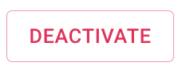

Functions
The p-Chip Cloud web application is designed to give an organization full control and visibility of their
supply chain. To achieve this the web portal allows administrators to perform a series of functions that
enable p-Chip Cloud Desktop App users to perform tasks such as incoming and outgoing inventory checks,
quality control and much more. Below is a list of functions currently available to Organization
Administrators.
List of Functions
- Dashboard
- Users
- Licenses
- Groups
- Products
- Tests
- Tags
- Tag Activities
- Error Reports
- Organizations (p-Chip Admin Only)
- Account Requests (p-Chip Admin Only)
Dashboard
The p-Chip Cloud Dashboard is the command center for managing your global supply
chain. It is designed to give you a high level understanding of where your products are, the overall
activity of your supply chain and the number or percentage of goods lost or
Inactive.
Components
- Tracked Items: Total number of p-Chips applied and recorded by your
organization in the p-Chip Cloud tracking system.
- Active Items: Total number of p-Chips with a status of Active
- Inactive Items: Total number of p-Chips with a status of
Inactive
- Activity: Total number of scans of p-Chips performed by users with active
licenses across your organization.
- Tracked Items (Map): Last scanned location of p-Chip microtransponder tags
created by your organization.
- Tracking Activity (Bar Chart): Total number of scans of p-Chips performed by
users with active licenses across your organization's plotted over time.
Users
The users section allows you to add web application users to your organization. These users have full
access and permissions to manage the account. The Users section can
be accessed via the left navigation pane.
Components
- Users tab: Accessible via the main navigation
- Filter pane: Filter the list of organization users by their status, role or
organization
- Add User: Add users to your organization
- User List: List of all users with access to your organization
Adding Users
- From the User List, select
- Enter the user's First Name
- Enter the user's Last Name
- Enter the user's Email Address
- The Organization and Profile are populated by default
- Select to save the user to your organization
- Select the User you have just created from the User List
- Copy and paste the Activation Code from the User Details view
- Instruct the user to log-in and enter the Activation Code when prompted
- p-Chip Admin Only
- Select the users Organization if you are creating a user on behalf of a
Client Administrator
View User Details
- Select a User from the User List
- Available User Information:
- - Name
- - Email
- - Activation Code
- - Organization
- - Status
- - Role
- The following lists show the entries created by the user:
- - Users
- - Licenses
- - Products
- - Groups
- - Tests
- Select to return to the User List
Editing User Information
- Select a User from the User List
- Select
- You can edit the following user information:
- - First Name
- - Last Name
- - Email
Deactivate Users
For security reasons, users cannot be removed from the system. However, their access rights can be
removed at any time by deactivating their account. Once deactivated, the user will
no longer have access to the p-Chip Cloud Web App or your organization's information.
- Select a User from the User List
- Select 
Licenses
Licenses are used by the p-Chip Cloud Desktop Application to authorize your organization's devices to
create and search for your products with p-Chip microtransponder tags. Licenses are issued on a
device basis meaning that they cannot be reused across devices. Licenses are issued by the client
administrator through the web portal. Licenses that have been issued to your organization and are no
longer in use can be deactivated at any time.
Components
- Your organization List of Licenses are accessible via the main navigation menu
- Filter your organization list of licenses by
- - Organization (p-Chip Admin Only)
- - Created by User
- - License Number
- - License Status
- Add Licenses to your organization at any time
- View a full list of licenses issued by your organization
Issuing Licenses
- Select the
- Copy and Paste the License Number and License Key and send to
the user of the device that you would like to activate
- Enter a meaningful description to whom you have provided the license. This will help you in the
future if you need to deactivate a specific user or device access rights
- Select
View License Details
- Select a License from the License List
- Available License Information:
- - License Number
- - License Key
- - Created Date
- - Created By (User)
- - Assigned To
- The following lists show information about the license access and activity:
- - Groups: Groups to which the license belongs
- - Tags: Tags created by the license
- - Tag Activity: All scans and activities performed by the license
- Select to return to the License List
Assign Licenses to Groups
Licenses and groups are how we ensure the security of data within an organization. If you are an
organization with 300 locations, your users don't need nor want to see the activity of all 300
locations. To ensure the user only sees what they need to see, assigning licenses to groups cuts out
the noise by only showing the user what they need to see. One license can belong to 1 or multiple
groups.
- Select a License from the License List
- Select
- Select 1 or more Groups from the available list by selecting the checkbox
- Select

Deactivating Licenses
- Select a License from the License List
- Select in the upper right hand corner
- Select to return to the License List
Groups
Groups are how data is segregated with an organization. Groups can be a physical location, a
department or any other type of a group of devices. Groups allow p-Chip Cloud Desktop App users to
share data, collaborate and stay up to date with team activities no matter where they are in
the world. Groups reside within an organization and cannot span outside of the organization.
Components
- Your organization List of Groups are accessible via the main navigation menu
- Filter your organization list of Groups by
- - Name
- - Department
- - Created by User
- - Status
- - Address: Street, City, Postal Code, Country
- Add Groups to your organization at any time
- View a full list of Groups created by your organization
Creating Groups
- Select
- Enter the following information into the Create Group Form
- - Reference ID: Any existing unique identity code you have for this group.
This can be a department code, location ID or other. Use this field to enable you to
connect your existing applications to p-Chips Cloud Platform via their API
Services
- - Name
- - Description
- - Address Information: Apartment #, Street, City, Postal Code, Country
- - Department
- Select
View Group Details
- Select a Group from the Group List
- Available Group Information:
- - Reference ID
- - Name
- - Description
- - Created Date
- - Created By (User)
- - Department
- - Address
- The following lists show information about the group membership, access and activity:
- - Licenses: Licenses that have access to the group
- - Products: Products that can be assigned to tags by group members
- - Tags: Tags created by the group members
- - Tag Activity: All scans and activities performed by group members
- Select to return to the Group List
Assigning Licenses to Groups
- Select a Group from the Group List
- Select
- Select 1 or more Groups from the available list by selecting the checkbox
- Select
Assigning Products to a Group
- Select a Group from the Group List
- Select
- Select 1 or more Products from the available list by selecting the checkbox
- Select
Deactivating a Group
- Select a Group from the Group List
- Select in the upper right hand corner
- Select to return to the Group List
Products
Products are physical goods or items that your organization wants to track across the supply chain or
for the service life of the item such as equipment or devices. Products are created within an
organization and assigned to various groups. When a product is assigned to a group, group members
can create or convert items with p-Chip microtransponder tags and store this information in the
p-Chip Cloud so it is accessible across your organization.
Components
- Your organization List of Products are accessible via the main navigation menu
- Filter your organization list of Products by
- Add Products to your organization at any time
- View a full list of Products created by your organization
Creating Products

- Select
- Enter the following information into the Create Product Form
- - Reference ID: Any existing unique identity code you have for this
Product.Use this field to enable you to connect your existing applications to p-Chips
Cloud Platform via their API Services
- - Name
- - Description
- - Comments
- - Classification Statuses: A classification status is designed to allow
you to record the state of a good in any production or quality control process. Common
examples include: "Not Started", "In Process", "Quality Control", "Approved",
"Rejected". These statuses can be customized to your own organization and to the product
itself for greatest possible flexibility.
- Select
View Product Details
- Select a Product from the Product List
- Available Product Information:
- - Reference ID
- - Name
- - Description
- - Classification Statuses
- - Created Date
- - Created By (User)
- - Last Scan Date
- - Last Scanned By
- The following lists show information about the product in your organization:
- - Tags: Tags with the related product assigned to them
- - Tag Activity: All scans and activities performed for tags with the
related product assigned to them
- - Groups: Groups to which the product has been assigned and group members
can use when creating or converting tags
- Select to return to the Product List
Assigning Products to a Group
- Select a Product from the Product List
- Select
- Select 1 or more Groups from the available list by selecting the checkbox
- Select
Deactivating a Product
- Select a Product from the Product List
- Select in the upper right hand corner
- Select to return to the Product List
Tests
A test is any physical inspection, measurement or other text based information that is important to
associate with a product and eventually make available to your supply chain partners. These can
include quality control tests, inventory stock takes, information for consumers and much more.
Components
- Your organization List of Tests are accessible via the main navigation menu
- Add Tests to your organization at any time
- View a full list of Tests created by your organization
Creating Tests

- Select
- Enter the following information into the Create Test Form
- - Refrence ID: Any existing unique identity code you have for this Test.
Use this field to enable you to connect your existing applications to p-Chips Cloud
Platform via their API Services
- - Name
- - Description
- - Type: This feature is currently depreciated. All tests created will be
a result type Text.
- Select
View Test Details
- Select a Test from the Test List
- Available Product Information:
- - Reference ID
- - Name
- - Description
- - Created Date
- - Created By (User)
- - Result Type
- - Result Measure (Depreciated)
- The following lists show information about the test in your organization:
- - Tags: Tags where the related test has been performed on.
- - Tag Activity: All scans where the related test was performed.
- Select to return to the Test List
Deactivating a Test
- Select a Test from the Test List
- Select in the upper right hand corner
- Select to return to the Test List
Tags
Tags are p-Chip micro transponders that have been applied to products or items by your organization
using the p-Chip Cloud Desktop App. When a tag is created it is immediately visible in the cloud
along with metadata and logging information that helps your organization identify potential security
threats immediately.
Components
- Your organization List of Tags are accessible via the main navigation menu
- Find specific items quickly by filtering on:
- - p-Chip serial number
- - Internal serial number or unique ID
- - Created Location, Date/Time or Group
- - Last Scanned License, Location, Date/Time or Group
- - Tag Status
- View a full list of Tags created by your organization
View Tag Details
- Select a Tag from the Tag List
- Available Product Information:
- - p-Chip ID
- - External ID
- - Product Name
- - Product Description
- - Product Quality Status
- - Production Date
- - Production Location
- - Created Date
- - Created Group
- - Created Location
- - Last Scanned Date
- - Last Scanned Group
- - Last Scanned Location
- - Original Equipment Manufacturer (OEM)
- Tag Activity: All scans and activities performed on the tag
- Select to return to the Tags List
Deactivating a Tag
The p-Chip status, a value of Active or Inactive, is used to control the tracking status of the item.
If an item is lost, stolen or is not fit for use or sale, the tag can be deactivated which notifies
the manufacturing and supply chain that the attached item is no longer authenticated by your
organization. To deactivate a tag:
- Select a Tag from the Tag List
- Select in the upper right hand corner
- Select to return to the Tag List
Tag Activities
Tag activities are specific events that are recorded in the p-Chip Cloud and made accessible across
your organization. There are currently 4 activities currently supported. These include:
 A tag is added to your organization
A tag is added to your organization- A product is added to an existing tag in your organization. A
single p-Chip can be "converted" into multiple products during its life cycle, just as goods
may change from raw materials to intermediates to finished goods. Each transformation of a good
is captured with the Product Add event.
- A test is performed on a tag.
- A tag is searched by a user within your organization.
During each of these activities, metadata on time, location, device, equipment and user information
is collected and stored to improve visibility across your global supply chain.
Components
- Your organization List of Tag Activities are accessible via the main navigation
menu
- Find specific items quickly by filtering on:
- - p-Chip serial number
- - External ID
- - Product
- - License
- - Group
- - Type
- Export a full list of your organization's Tag Activities in csv format
- View a full list of Tag Activities created by your organization
Error Reports
Error reports are user generated reports across your organization. These reports are created in the
p-Chp Cloud Desktop App and are designed to allow quick and easy communication between your
organization administrators and field users. Here users can report equipment issues, product issues
and more.
Organizations (p-Chip Admin Only)
Organizations are companies or businesses that are using the p-Chip Cloud platform for securing their
supply chain. Organization data is segmented so that their data is secure and can only be
accessed by administrator permissions detailed in the Users and License sections.
Create an Organization
When a client has been approved for an account, the first step is to create a new organization. This
organization account is where all future activities will be performed by an organization administrator.
To create a new organization, follow the steps below:
- Navigate to the Organization tab
- Select +Add Organization in the upper right hand corner
- Complete the Create Organization form
- Select
Remove Organization Access
- Select an Organization from the list
- Select
Account Requests (p-Chip Admin Only)
Prospective customers may request account access using the Request
Account function. When new requests are received, these will be reviewed internally. If
approved, you can approve the account request by following the below steps.
Approve Account Requests
- Navigate to the Account Requests tab
- Select the relevant account request from the list
- Select Approve to approve the request